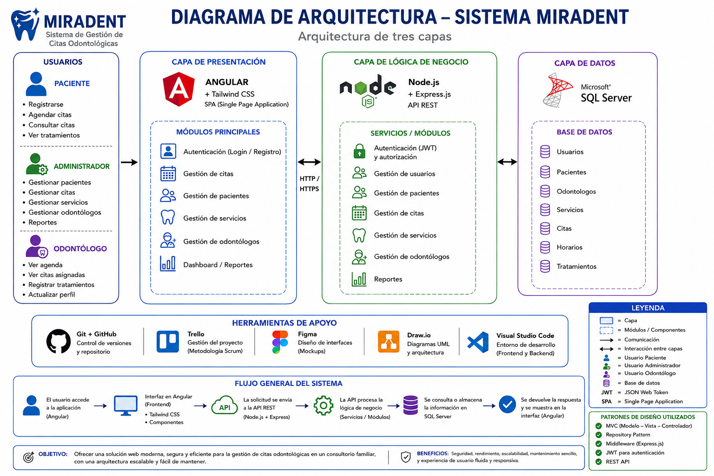

Proyecto formativo — Tecnólogo ADSO
Gestion de citas MIRADENT
03
Situación Problema
En la actualidad, muchos consultorios odontológicos, especialmente los de pequeño y mediano tamaño, aún gestionan gran parte de sus procesos administrativos y clínicos de forma manual o mediante herramientas poco integradas. Esta situación dificulta el control de las citas, el registro de pacientes, el acceso a las historias clínicas y la organización de la información, lo que puede generar retrasos, pérdida de datos y una atención menos eficiente.

07
Diagramas

Diagrama de Clases
Representa la estructura estática del sistema MIRADENT: clases, atributos, métodos y relaciones que sirven de base para la implementación en ASP.NET Core y Angular.

Diagrama de Arquitectura
Presenta la organización en tres capas (presentación, lógica de negocio y datos) y la comunicación entre Angular, ASP.NET Core Web API y SQL Server.

Modelo Entidad Relación
Identifica las entidades principales y sus relaciones para gestionar pacientes, odontólogos, servicios, horarios, tratamientos y citas odontológicas.

Modelo Conceptual
Define las entidades del negocio y sus relaciones de forma abstracta, sin depender de ningún motor de base de datos, enfocándose en la comprensión del dominio.

Modelo Lógico
Traduce el modelo conceptual a tablas, columnas y claves (primarias y foráneas), definiendo la estructura relacional independiente de la plataforma.

Modelo Físico
Especifica la implementación real en SQL Server: tipos de datos concretos, índices, constraints y scripts DDL listos para ejecutar en la base de datos.
08
Arquitectura del Proyecto
Arquitectura
El sistema MIRADENT implementa una arquitectura de tres capas: presentación, lógica de negocio y datos. La capa de presentación se desarrolla con Angular y Tailwind CSS para ofrecer una interfaz moderna, responsiva e intuitiva. La lógica de negocio se implementa con Node.js y Express.js, exponiendo una API REST encargada de procesar las reglas del sistema y gestionar la comunicación con la base de datos. La información se almacena en SQL Server, garantizando integridad y organización de los datos. La comunicación entre las capas se realiza mediante el protocolo HTTP/HTTPS, permitiendo un intercambio seguro y eficiente de la información.

Patrones de Diseño
MVC — Model View Controller
Separa la presentación (View), la lógica de negocio (Controller) y el acceso a los datos (Model) en componentes independientes.
¿Por qué? Permite desarrollar el frontend y el backend de manera independiente, facilita el mantenimiento del sistema y mejora la organización del código.
Repository Pattern
Centraliza el acceso a la base de datos mediante repositorios encargados de realizar las consultas y operaciones CRUD sobre SQL Server.
¿Por qué? Evita mezclar consultas SQL con la lógica de negocio, facilita el mantenimiento del código y permite cambiar la implementación del acceso a datos sin afectar el resto del sistema.
Middleware Pattern
Utiliza middlewares de Express.js para procesar las solicitudes antes de llegar a los controladores.
¿Por qué? Permite implementar autenticación JWT, validación de datos, manejo de errores, registro de peticiones y control de acceso de forma centralizada y reutilizable.
Estándares
Metodología — Scrum
Product Backlog
Contiene todas las funcionalidades del proyecto MIRADENT: autenticación, gestión de pacientes, odontólogos, servicios, horarios y citas, priorizadas según los objetivos del proyecto.
Sprint
El desarrollo se organiza en sprints de dos semanas, permitiendo entregas incrementales y retroalimentación continua.
Sprint Backlog
Incluye las tareas del sprint: diseño en Figma, frontend en Angular, API en ASP.NET Core, base de datos en SQL Server y pruebas de cada módulo.
Daily Scrum
Reuniones breves para revisar el avance, identificar dificultades y planificar las actividades del día.
Review
Al finalizar cada sprint se presentan las funcionalidades desarrolladas y se recopila retroalimentación para el siguiente sprint.
Sprint Retrospective
El equipo analiza fortalezas y oportunidades de mejora para optimizar el trabajo colaborativo en las siguientes iteraciones.
Diagrama Scrum

08.1
Manual de Marca
Logo Principal
Versiones del Logo

Paleta de Colores

Tipografía